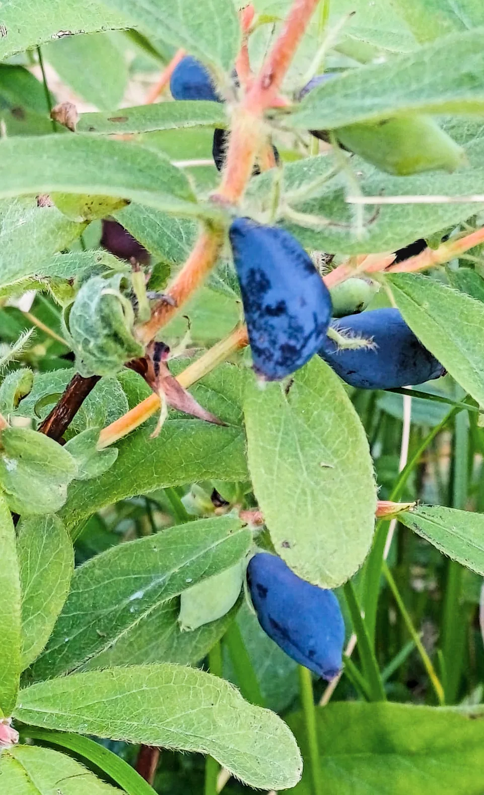

Lapin
Hunajamarja
Arktista luomuhunajamarjaa yhdeltä maailman pohjoisimmista marjatiloista. Perhetilamme sijaitsee Posiolla, jossa pitkät pakkastalvet, suojaava lumipeite ja yöttömät kesäyöt luovat hunajamarjalle ainutlaatuisen kasvuympäristön. Me hoidamme maata ja kasvustoa luonnon ehdoilla – pohjoinen valo, puhdas kasvuympäristö ja elävä maaperä huolehtivat lopusta.
TUMMANSININEN MARJA, POIKKEUKSELLINEN KOOSTUMUS
Haskap eli hunajamarja on marjasinikuusaman syötävä marja. Se muistuttaa ulkomuodoltaan pitkulaista mustikkaa, mutta sen maku on omaleimainen: kypsässä marjassa makeus ja raikas hapokkuus ovat tasapainossa, ja maussa voi erottaa vadelman ja mustaherukan vivahteita.
Aasiasta Kanadan kautta Posiolle.
Sinikuusama (Lonicera caerulea) kasvaa luonnonvaraisena pohjoisissa metsissä Aasiassa, Euroopassa ja Pohjois-Amerikassa. Marjantuotantoon jalostettuja sinikuusaman lajikkeita kutsutaan marjasinikuusamiksi.
Haskap-nimi on peräisin Pohjois-Japanin ainukansalta. Hokkaidōssa marjaa on hyödynnetty jo vuosisatojen ajan, ja Japanissa se tunnetaan ikuisen nuoruuden marjana – viittauksena ainujen perinteeseen, jossa marja yhdistetään pitkään elämään ja hyvään näköön. Euroopassa hunajamarja on vielä uusi tulokas: EU hyväksyi Lonicera caerulea -marjojen saattamisen markkinoille perinteisenä kolmannen maan elintarvikkeena joulukuussa 2018.
Hunajamarja hyötyy paljon ristipölytyksestä. Tilalla kasvaa kolme kanadalaisen Saskatchewanin yliopiston jalostamaa marjasinikuusaman Boreal-lajiketta. Valitsimme ne erityisesti siksi, että ne kukkivat ja kypsyvät myöhemmin kuin monet muut hunajamarjalajikkeet. Myöhäisempi kasvurytmi sopii luontevasti Posiolle, jossa kevät saapuu hitaasti ja kasvukausi alkaa myöhään.

- Boreal Beauty – suuret, kiinteät ja mehevät marjat
- Boreal Beast – keskikokoiset ja poikkeuksellisen aromikkaat marjat
- Boreal Blizzard – erittäin suuret, makeat ja miedon hapokkaat marjat
Marjan syvänsininen väri on peräisin antosyaaneista, joista merkittävin on syanidiini-3-glukosidi. Hunajamarja sisältää myös muita polyfenoleja, syötävissä hedelmissä harvinaisia iridoideja, C-vitamiinia sekä muita vitamiineja ja kivennäisaineita. Näiden yhdisteiden ansiosta hunajamarjalla on tutkimuksissa havaittu korkea antioksidanttikapasiteetti, ja sitä voidaan pitää ravitsemuksellisesti poikkeuksellisen arvokkaana marjana.
Yleisen tutkimustiedon lisäksi haluamme tietää tarkasti, mitä omat marjamme sisältävät. Ensimmäisestä myytävästä sadosta teetämme laboratorioanalyysit, joista julkaisemme tulokset avoimesti näillä sivuilla niiden valmistuttua.
Emme muokkaa maata. Annamme sen tehdä työnsä.
Etelämpänä ja tuotantoa tehostavilla viljelymenetelmillä voidaan tavoitella suurempia satoja. Me olemme tietoisesti valinneet toisen lähtökohdan: tavoitteemme ei ole mahdollisimman suuri sato, vaan mahdollisimman laadukas marja ja luontoarvojen vaaliminen. Uskomme, että laadukas marja alkaa elävästä ja hyvinvoivasta maaperästä. Emme pyri korvaamaan maan omaa toimintaa runsaalla lannoittamisella, vaan ylläpidämme maan luonnollista ravinnekiertoa ja annamme hunajamarjan kasvaa omaan tahtiinsa. Seuraamme maaperän ja kasvien hyvinvointia ja lisäämme ravinteita vain todetun tarpeen mukaan.
Kasvatamme hunajamarjaa luomuna ja uudistavan viljelyn no-till-periaattein eli maata muokkaamatta. Istutuksessa teimme jokaiselle taimelle vain sen tarvitseman pienen istutusreiän. Muuten jätimme olemassa olevan kasvillisuuden juuristot ja sienirihmastot koskemattomiksi.
Pysyvä kasvipeite suojaa maata ympäri vuoden, ylläpitää sen rakennetta ja tarjoaa elinympäristön maaperän pieneliöille. Jätämme niittojätteen pellolle palauttamaan maahan eloperäistä ainesta ja ravinteita. Näin tuemme maaperän luontaista hedelmällisyyttä.

MATKA HUNAJAMARJATILAKSI
Pelto luonnon hoidossa
Pelto ei ole koskaan ollut tehomaatalouden käytössä. Heinää viljeltiin siellä pienimuotoisesti yhden perheen voimin viimeksi 1960-luvulla. Sen jälkeen pelto jäi luonnon hoidettavaksi: niittykasvillisuus sai kehittyä omalla painollaan, ja pellolla kulkeneet porot laidunsivat sitä ajoittain.
Ympäröivästä metsästä pellolle levisi myös metsäkasveja, jotka rikastuttavat sen lajistoa edelleen. Peltoa ympäröi metsä joka suunnasta, ja se tuo peltometsäviljelyn hyötyjä ja ylläpitää pellon vesitaloutta. 100–300 metrin päässä etelässä, lännessä ja pohjoisessa on järvi, joka lisää ilmankosteutta, tasaa lämpötilan vaihteluita ja vähentää hallan esiintymistä.
Ojanvarsilla kasvaa eri pajulajeja, katajia, koivuvesakkoa ja muuta luonnonvaraista pensaikkoa, jotka lisäävät monimuotoisuutta sekä tarjoavat suojaa ja ravintoa pölyttäjille ja muille hyönteisille.
Hunajamarjan viljely ja luomuvalvonta alkavat
Ensimmäiset hunajamarjan taimet istutettiin toukokuussa 2023. Kevään aikana peltoon istutettiin kaikkiaan 5 000 tainta. Peltoa ei muokattu, vaan jokaiselle taimelle tehtiin ainoastaan pieni istutusreikä.
Samana kesänä pelto niitettiin ensimmäisen kerran vuosikymmeniin. Niiton lisäksi ojanvarsilta kaadettiin huonokuntoisia hieskoivuja. Hakkuutähteet jätettiin pellolle maatumaan ja palauttamaan eloperäistä ainesta osaksi pellon luonnollista ravinnekiertoa.
Viljelmä kasvaa ja pellon kasvipeitettä monipuolistetaan
Keväällä 2024 istutettiin vielä 4 000 tainta, jolloin taimien kokonaismäärä nousi 9 000 taimeen.
Pellolle vuosikymmenten aikana muodostunutta kasvipeitettä täydennettiin monilajisella viherlannoitusseoksella. Kasvustoa ei korjata sadoksi, vaan sen tehtävänä on hoitaa maata hunajamarjataimien ympärillä.
Seos kylvettiin talven jäljiltä vielä lepotilassa olleen niittykasvillisuuden joukkoon maata muokkaamatta tai vanhaa kasvillisuutta poistamatta. Näin uusi kasvusto täydentää ja monipuolistaa pellolle vuosikymmenten aikana muodostunutta pysyvää kasvipeitettä.
Seos sisältää timoteita, natalajeja, puna-apilaa, valkoapilaa, alsikeapilaa ja sinimailasta. Apilat ja sinimailanen sitovat juurinystyräbakteeriensa avulla ilmakehän typpeä osaksi pellon ravinnekiertoa. Heinät ottavat ravinteita talteen, ja kasvien erilaiset juuristot tukevat maan rakennetta ja maaperän eliöstöä.
Taimet vahvistuvat
Vuoteen 2025 mennessä valtaosa taimista oli selvinnyt ensimmäisistä kasvuvuosistaan hyvin ja sopeutunut pohjoisiin olosuhteisiin. Taimille annettiin ensimmäisen kerran pieni, suoraan niiden juuristoalueelle kohdennettu annos luomutuotannossa sallittua lannoitetta.
Lisäksi kasvustoa on tuettu istutusvuodesta lähtien vuosittain lehdille annettavilla biostimulanteilla. Ne eivät korvaa lannoitusta, vaan niiden tarkoituksena on tukea juuriston kehittymistä ja kasvien kykyä kestää vaihtelevien sääolojen aiheuttamaa stressiä.
Ensimmäiset tuotekokeilut
Saamme viljelmältä jo pienen koesadon, jonka avulla pääsemme tekemään ensimmäisiä tuotekokeiluja yhteistyössä Lapin ammattikorkeakoulun kanssa. Kokeilut luovat pohjaa tulevien hunajamarjatuotteiden kehittämiselle ennen ensimmäistä myytävää satoa.
Kaikissa tulevissa tuotteissa käytettävä hunajamarja on oman tilan luomusertifioitua satoa ja jäljitettävissä pellolle asti.
Tavoitteena ensimmäinen myytävä sato
Kukinnan aikaan lähialueen ahkerat mehiläiset saapuvat avuksi pölytystyöhön – kiitos, Medenneitojen Hunaja!
Kesällä 2027 tavoitteenamme on korjata tilan ensimmäinen myytävä sato. Sadon korjaamme marjanpoimintakoneella emmekä käsin. Näin koko sato saadaan talteen kerralla parhaassa kypsyysasteessa.
Sama marja, kaksi täysin vastakkaista valoa.
Pohjoinen talvi
Pitkä pakkas- ja lumikausi · loka–huhtikuuLokakuussa päivät lyhenevät nopeasti ja talvi saapuu. Kylmyys pitää hunajamarjan talvilevossa, ja runsas lumipeite eristää maata ja suojaa juuristoa kovimmilta pakkasilta. Revontulten loimutessa luonto lepää lumen alla ja valmistautuu uuteen kasvukauteen.
Valkea kesäyö
Keskiyön aurinko · kesä–heinäkuuJuhannuksen ympärillä aurinko ei laske Posiolla viikkoihin. Ympäri vuorokauden jatkuva valo tarjoaa hunajamarjalle runsaasti aikaa yhteyttämiseen ja tukee marjojen kasvua ja kypsymistä. Lyhyen pohjoisen kesän aikana luonto on täynnä kasvun voimaa.
Päivän pituus kuukausittain
Pohjoisessa päivän pituus vaihtelee vuoden aikana ääripäästä toiseen: keskitalvella valoisaa aikaa on vain muutama tunti, kun taas keskikesällä aurinko pysyy horisontin yllä läpi yön. Pitkä talvilepo ja yötön yö luovat hunajamarjalle pohjoisen rytmin, jossa kasvu ja marjojen kypsyminen tiivistyvät lyhyeen mutta valoisaan kesään.
Lähde: Laskettu tilan koordinaateille (66°20′35″ N) vakiintuneella auringonnousu-laskukaavalla, joka huomioi ilmakehän taittumisen. Vrt. Helsingin yliopiston almanakkatoimisto (almanakka.helsinki.fi).
Kuukausittaiset ylimmät ja alimmat mitatut lämpötilat
Ennätykset ovat syntyneet eri ajankohtina pitkän havaintohistorian aikana, eivät yhden vuoden kuluessa. Heinäkuun helteiden ja tammikuun pakkasten välinen valtava vaihtelu kertoo pohjoisen voimakkaasta vuodenkierrosta – olosuhteista, joihin hunajamarja on luontaisesti sopeutunut.
Lähin lämpötilahavaintoasema: Kuusamo Rukatunturi (FMISID 101897), noin 47 km tilalta · Aineisto: 5.11.1993–23.7.2026 · Lähde: Ilmatieteen laitoksen avoin data
Luontaiset sokerit ja orgaaniset hapot.
Marjan sokerit ovat yhteyttämisen tuotteita. Lehdet valmistavat niitä auringonvalon avulla, ja niitä kulkeutuu kasvukauden aikana marjaan. Hapot puolestaan syntyvät osana marjan omaa aineenvaihduntaa jo kehityksen alkuvaiheessa. Kypsymisen aikana niiden määrä ja koostumus muuttuvat, ja osa hapoista kuluu marjan energiantuotannossa.
Kyse on siis kahdesta eri prosessista, joita säätelevät osittain eri tekijät. Kypsymisen edetessä niiden välinen tasapaino kuitenkin muuttuu: sokerien määrä kasvaa ja happojen määrä vähenee.
Hyvässä marjassa makeus ja hapokkuus ovat tasapainossa. Täyteläinen maku syntyy niiden suhteesta, jota arvioidaan Brix-arvon ja titrattavan happamuuden avulla. Brix kertoo marjan liukoisen kuiva-aineen määrän ja antaa samalla hyvän arvion sokeripitoisuudesta. Titrattava happamuus kuvaa marjan sisältämien happojen kokonaismäärää paremmin kuin pelkkä pH. Näiden suhde on kansainvälisesti käytetty tapa arvioida makutasapainoa, ja se kertoo myös, milloin marja on parhaimmillaan poimittavaksi.
Pohjoinen kesä vaikuttaa molempiin puoliin. Valoisat yöt antavat kasville pitkän ajan yhteyttää ja kerryttää marjaan luontaisia sokereita. Viileät yöt puolestaan hidastavat marjan aineenvaihduntaa, jolloin orgaanisia happoja kuluu hitaammin.
Lapin Hunajamarja
Kuvia ja videoita tilalta


Sama näkymä, joka vuodenaika.
Yksi kiinteä riistakamera on kuvannut samaa kohtaa pellolla lokakuusta 2023 lähtien — talven lyhyistä päivistä yöttömään yöhön, kettu- ja jänishavainnoista poroihin.


Päivämäärä, kellonaika ja lämpötila ovat kameran itsensä kuviin tallentamia.
Kiinnostuitko tulevasta sadosta?
Ota yhteyttä, jos etsit arktista luomuhunajamarjaa tuotteisiin, jatkojalostukseen tai yhteistyöhön.